UX Design Internship at VF Corporation
VF is an apparel and footwear company owning brands like Vans and The North Face. I helped to improve both desktop and mobile web experiences for different brands’ e-commerce platforms. My work can be divided into three parts:
- Project Brief
- 2017.6 ~ 2017.12
- My Role
- UX Designer
- Method & Skills
- Competitive Analysis
- Wireframing
- Iteration
- Tools & Softwares
- Sketch
- Invision
- Wix
Design

I work under the digital platform, which maintains all the 7 brands' e-commerce websites. The team adopts agile development process. As a UX Designer, I work closely with other designers as well as the PM and developers. Most of my design work are about optimizing current features.
Process

Some Design Tickets ----
Ticket 1: Design for overflowing the minicart maximum height
Problem
The current dropdown minicart designs didn't take into account screen heights.
Of particular concern:
- The number of extra messages and buttons the brands electively place under the cart contents
- Scrolling, both the page as a whole and the scrolling of cart contents
- This has been reported in several bugs, and a ects all brands with the dropdown minicart. A platform-level solution is needed.
Existing Minicart
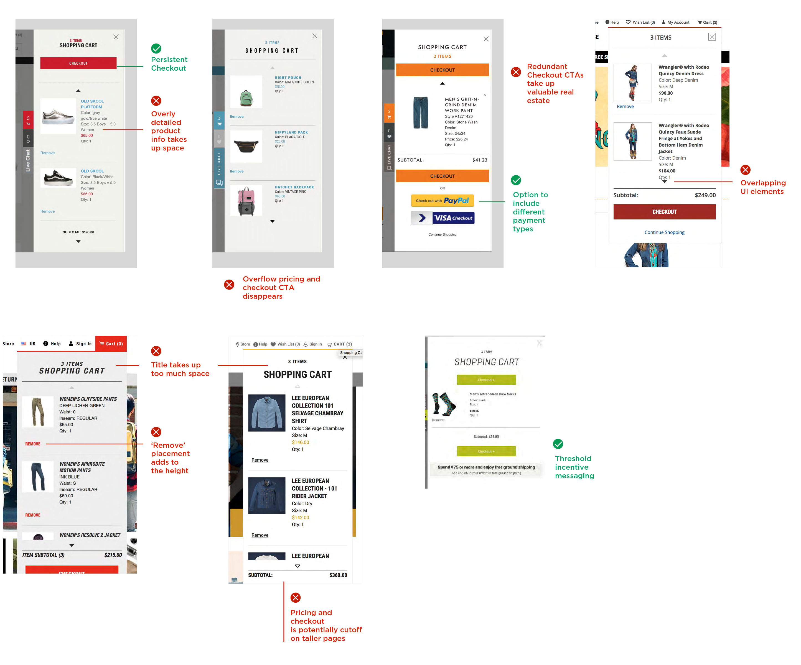
Design Options
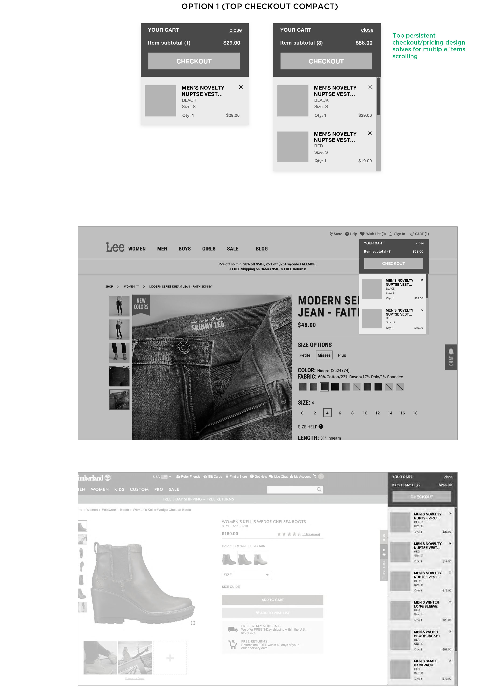 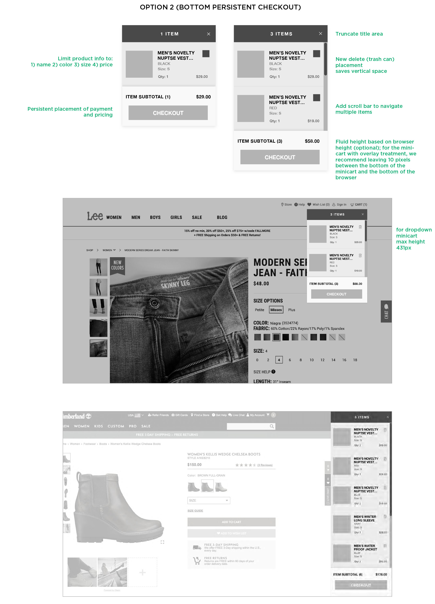 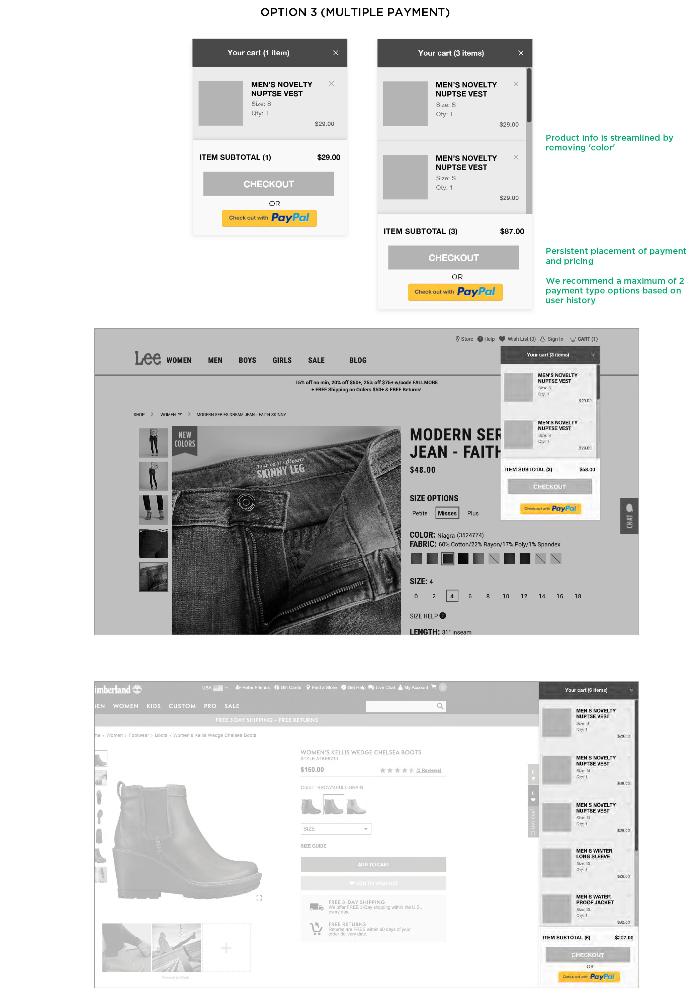
Ticket 2: Create a comp for the compare tool
Problem
When using the Compare tool, consumers can select UP TO 4 products. Currently, there is no message or action that takes place if a consumer tries to select a 5th. A comp showing a message saying they can only select up to 4 products is needed.
Design Options
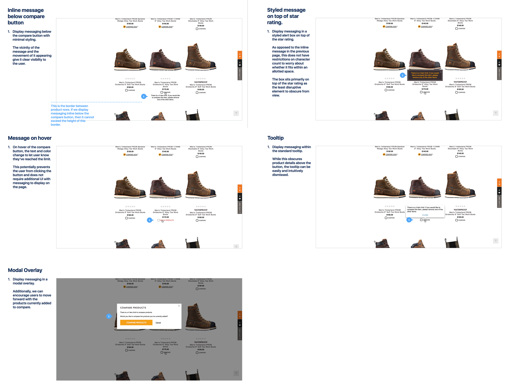
Ticket 3: Zero Results Recommendation
Problem
Wrangler (One of the 7 brands) would like to update their search results template to provide more guidance when there are no product results delivered from our on-site search provider.
Design Options
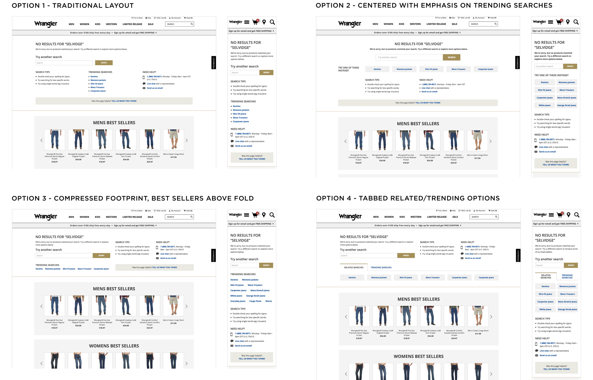
And there are more tickets...
Style Guide
Audit current Digital Style Guides for Reef
Problem
Over time, the digital style guides have lost full alignment with the site experiences as brands have added enhancements and other general changes and additions.
The goal is to complete an audit of each brand’s experiences and match that against the current digital style guides to see where the style guides need to be updated or expanded.
I was assigned to create a new style guide for Reef based on its current digital style guide.
Current Style Guide
The current the style guide is an interactive website. The bad thing about it is it's impossible to use these elements directly when designing new mockups. So we decided to create a sketch file where elements can be copied and reused easily.
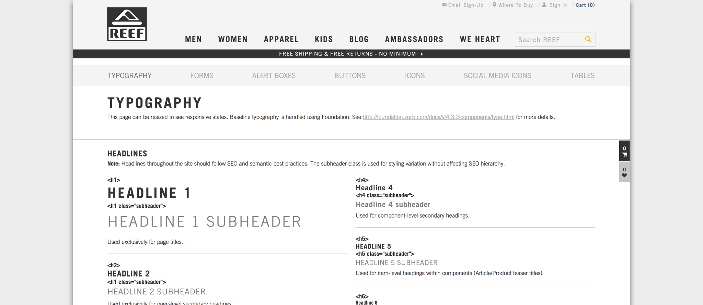
Final Deliverable
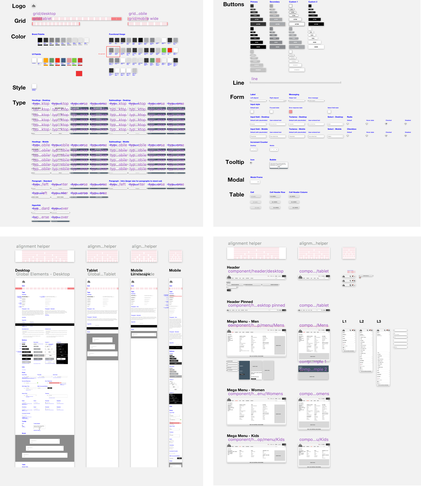
Detail Thinking
1. Check the color contrast between background color and text color.
2. Leave space for future customized design to maintain the consistency.
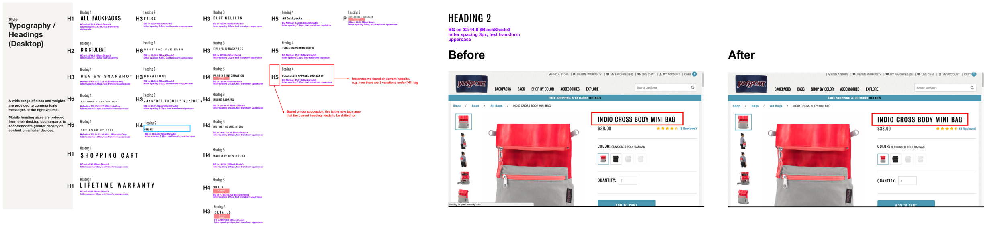
3. Provide recommendations for font sizes while trying to minimize the modification work for front-end engineers.
Research
I also got included in two research projects and I was in charge of doing the comparative analysis and writing reports. While there was no budget for me, I finished the research by viewing over 500 e-commerce websites/apps, calling other brands' customer service, requesting demos from sales representatives and going directly to other Brick-and-Mortar stores.
Research 1: Evaluate and Assess Page Widening Effect
Problem
The initial request is doing evaluation and assessment of taking the 12 brand sites to 1380 in width. How does this effect each brands content; what best practices should be followed.
Then the scope was expanded to include mobile version too: to research on what innovative interaction other e-commerce brands have nowadays.
Comparative Research Method
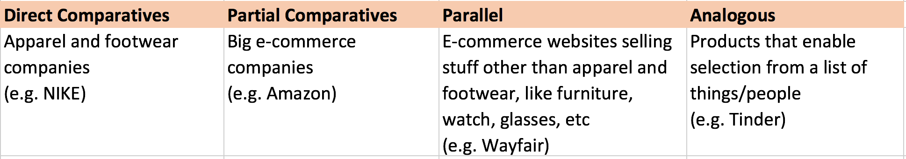
Research Result for Desktop
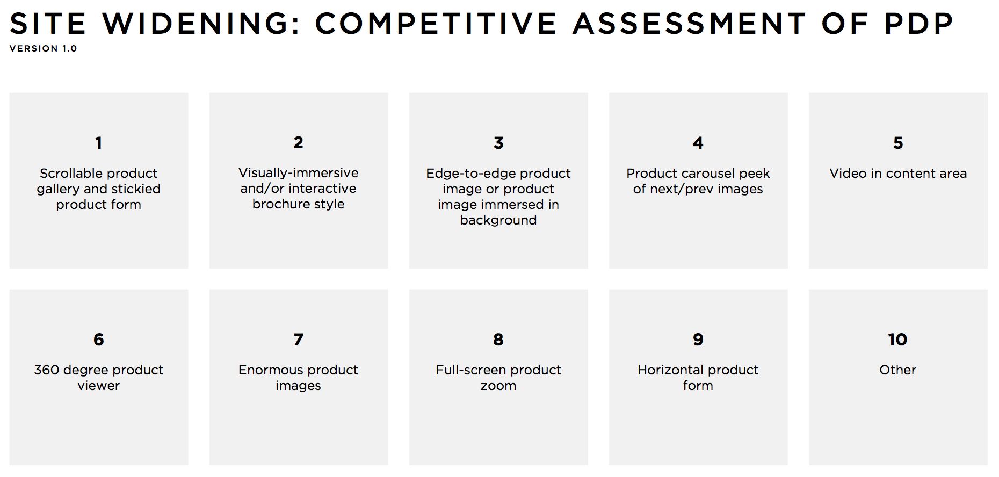Some examples:
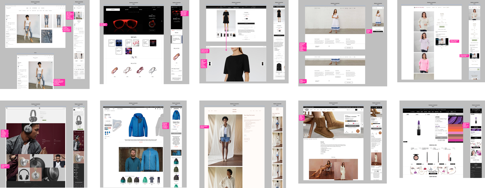
Research Result for Mobile
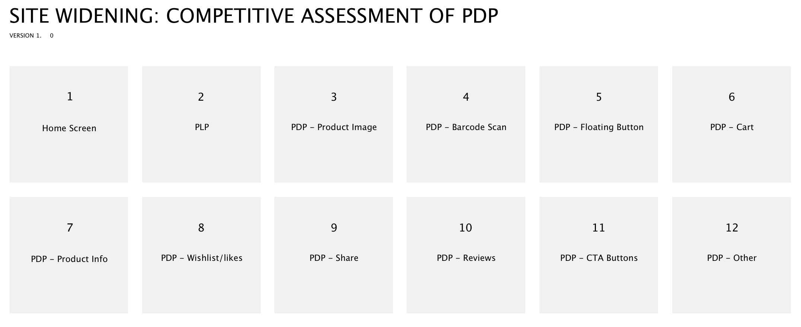Some examples:
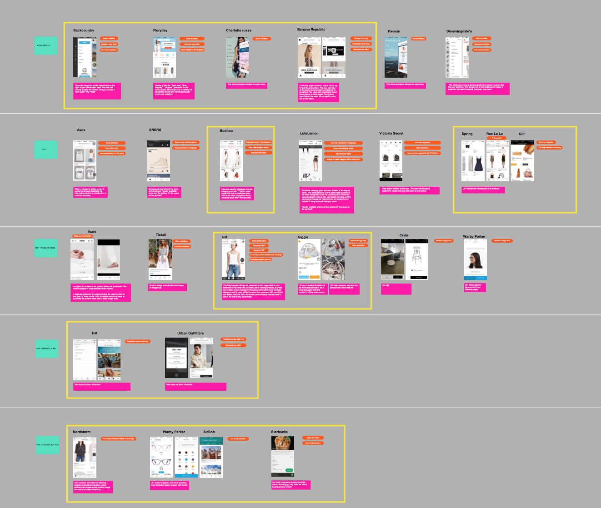
Research 2: Omni-channel
Problem
VF wants to effectively enable full omnichannel capabilities for TNF (The North Face) and Vans including mixed cart shopping. Other changes on the platform include PLP, PDP, Cart, Shipping, Billing, Confirmation pages as well as Transactional email changes.
Research Result
These contents are confidential now. Shoot me an email if you are interested!